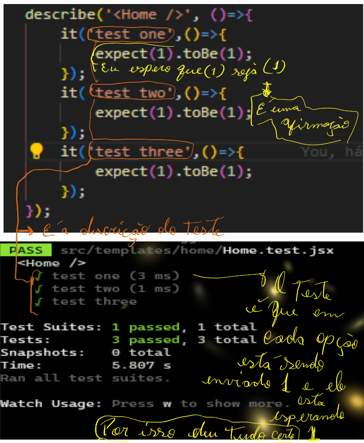
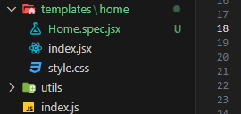
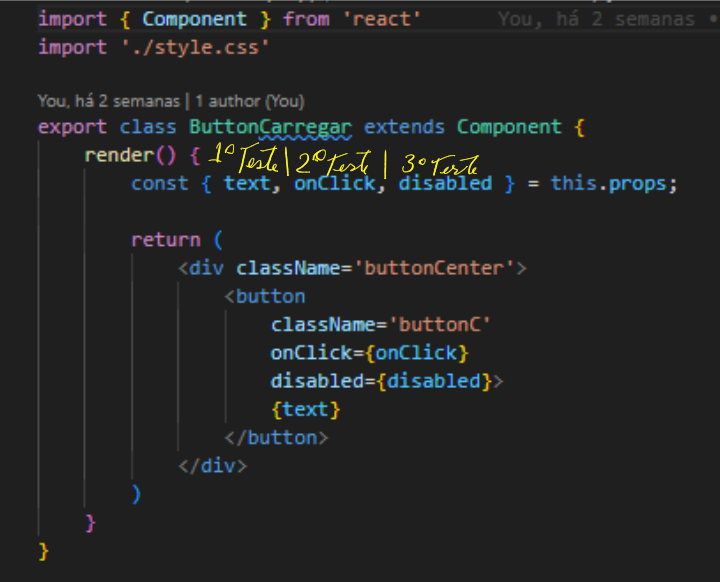
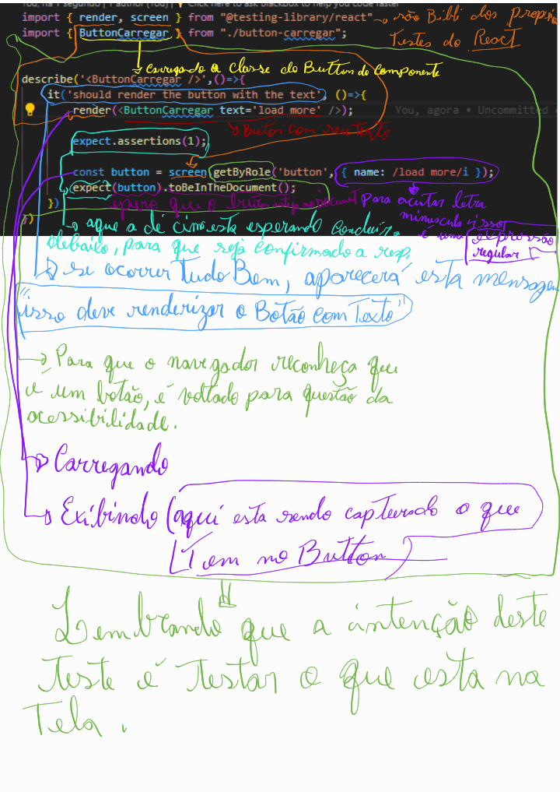
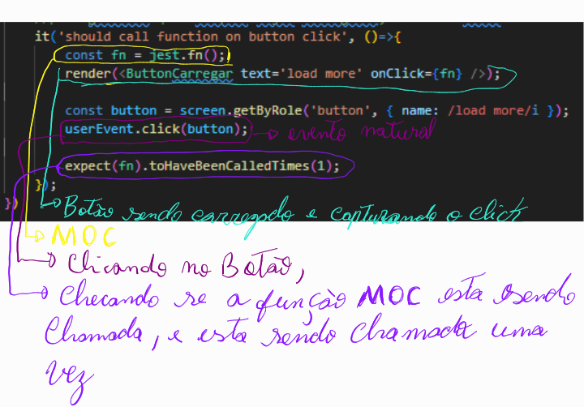
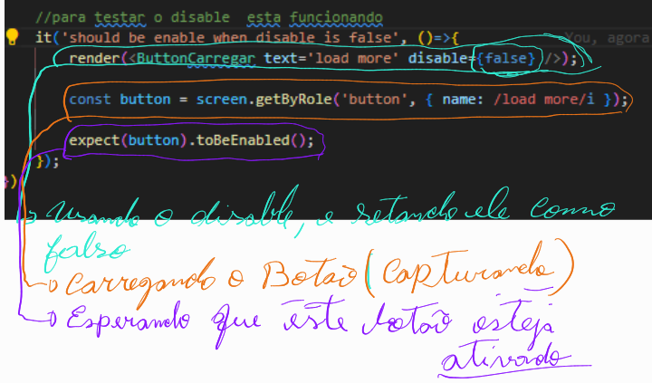

Jest-Dom
Jest é um framework de teste unitário de código aberto em JavaScript criado pelo Facebook, baseado framework Jasmine. Seu diferencial para o concorrente Jasmine seria a popularidade, flexibilidade e velocidade de execução.
- Verificações servem para validar um resultado de um teste;
- O Jest possui uma função global Javascript chamada ‘expect’, que recebe um parâmetro como argumento, que é o resultado a ser verificado;
- O ‘expect’ deve ser utilizado em conjunto com uma comparação (Matcher), que conterá o valor a ser comparado;
- Uma Spec poderá conter uma ou mais verificações;
- Uma boa prática é sempre manter as verificações no final da função.
Verificações
Estrutura do jest


O mock das dependências injetadas vai nos permitir testar nosso componente de maneira isolada, sem nos preocuparmos com as demais dependências da aplicação. Em tese será criada uma instância de objeto com dados “fake“, que refletirá toda vez que a dependência for requisitada. Primeiro ponto a ser observado no código são as variáveis que precisam ser inicializadas e as dependências a serem injetadas:
- Permitem criar funções e módulos falsos que simulam uma dependência.
- Com o mock é possível interceptar chamadas dessa função (e seus parâmetros) pelo código sendo testado.
- Permite interceptar instâncias de funções construtoras quando implementadas usando new.
- Permitem a configuração dos valores retornados para o código sob teste.
Funções mock
Criando o primeiro teste
Dentro do projeto vamos começar com o test do propria pagina inicial, q esta na home, e o arquivo de teste esatara com nome Home.spec.jsx
geralmente quando o teste é teste unitario sempre é coveniente vim como spec, lembrando q será testes individuais 
Testes no component Button
Este é o componente que esta sendo usado para exemplo, sendo que sera separado todas as ações do botao em testes separados  sendo q o primeiro teste a ser criado foi o do text, segue abaixo todo o procedimento e explicação na imagem:
Teste numero 1
Texto do button
Teste numero 2
click no botão
testando oclick no botão, neste exemplo será usada uma função para fazer os testes, e esta função é o mock, q foi explicado acima, e depois sera preciso fazer um evento de disparo para criar a ação de simular o click, para isso será usado a biblioteca de testes do react como no exemplo acima que foi usado o render e screen e para a situação do evento do click sera usada o fireEvent ou userEvent 
Teste numero 3
desativando botao botão
Agora sera preciso saber se quando o disable for passado para true , entao se o disable estiver em true o boao estara desativado esse é a idedia do teste 
Coverage
Para checar se falata algo para testar
Agora para checar se esta faltando algo no componente para ser testado é so usar o --coverage